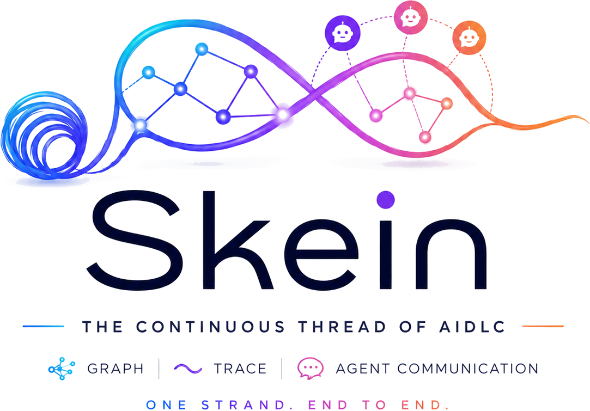
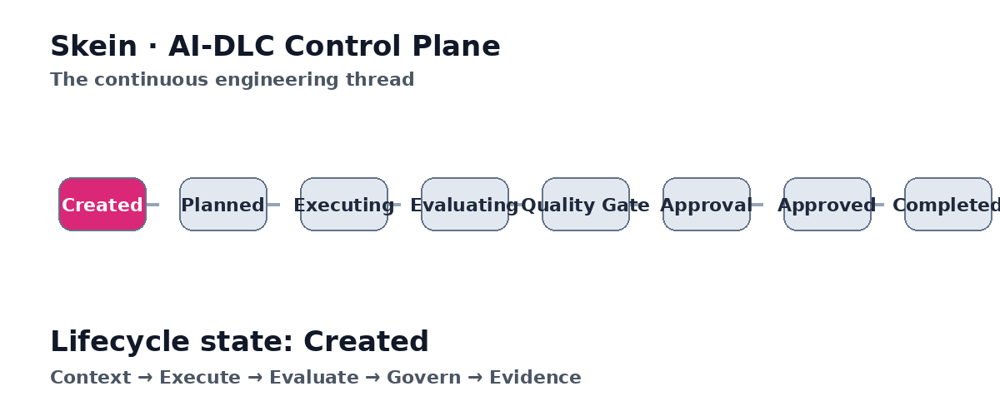

Engineering Graph
Queryable relationships across files, functions, classes, requirements and tests.
CALLS · IMPORTS · TESTS · JUSTIFIES
SKEINGitHub ↗Skein connects engineering knowledge, agent context, communication, traceability, governance and evidence across the AI-driven software lifecycle.
Install Skein, build the graph, expose it through MCP, and connect your existing AI workflow.
git clone https://github.com/itismohan/Skein.git
cd Skein
python -m venv .venv
source .venv/bin/activate
pip install -e '.[dev]'
skein init .
skein ingest .
skein mcp-stdio .Agents can read files, write code, call tools and run tests. Engineering decisions also depend on intent, dependencies, history, verification, risk, approvals and evidence.
Skein keeps those signals connected, so every agent does not have to reconstruct the engineering system from scratch.
WITHOUT SKEIN Agent → Repository → Guess → Generate → Hope
WITH SKEIN Context → Execute → Observe → Evaluate → Govern → Evidence
Skein is not another coding agent. It is the persistent layer around agents.
Queryable relationships across files, functions, classes, requirements and tests.
CALLS · IMPORTS · TESTS · JUSTIFIESSelect task-specific engineering evidence using relevance, connectivity, diversity and budget.
RELEVANCE · CONNECTIVITY · BUDGETGive specialized agents a shared engineering context without rebuilding the system model.
PLANNER · DEV · TEST · REVIEWConnect specification, implementation and verification across the lifecycle.
SPEC → CODE → TEST → EVIDENCETask, select, execute, observe, evaluate, learn and retry with bounded iterations.
EXECUTE ≠ SUCCESSLifecycle, policy, RBAC, SDD preflight, quality gates, approval and evidence integrity.
PLAN · APPROVE · FINALIZEExpose engineering context to compatible AI clients over stdio or HTTP.
QUERY · TRACE · DIFF · PROPOSECapture execution and quality signals so AI engineering claims can be measured.
QUALITY · COST · LATENCY · REWORKKeep clients, models and orchestration replaceable. Keep engineering context continuous.

Skein exposes graph and lifecycle capabilities through an MCP-compatible boundary. Your IDE remains the experience; your agent remains the reasoning interface.
skein mcp-stdio .HTTP
skein mcp-http . --host 127.0.0.1 --port 8765VS CODE · .vscode/mcp.json
{
"servers": {
"skein": {
"type": "stdio",
"command": "skein",
"args": ["mcp-stdio", "${workspaceFolder}"]
}
}
}Start with a vertical slice. Connect specification, implementation and tests. Expand the graph as evidence accumulates.
skein init . skein spec-check . skein ingest . skein query . "checkout" skein trace . --spec SKN-001 skein dashboard .
Characterize existing behavior before treating it as intent. Bound the change and preserve evidence.
TechnologyFocusSkein relationship
LangGraphAgent orchestrationComplementary
LlamaIndexData / RAGComplementary
MCPTool interoperabilityIntegration boundary
Tree-sitterSource parsingIngestion building block
SkeinContext + traceability + governance + evidenceContinuous layer
Control Plane, governance, quality gates, approval and evidence.
Enterprise integrations, PR workflows, CI/CD gates, identity and federation.
Production feedback, richer adapters and multi-project governance.
Requirements. Code. Tests. Decisions. Agent actions. Quality signals. Approvals. Evidence.
ONE STRAND. END TO END.